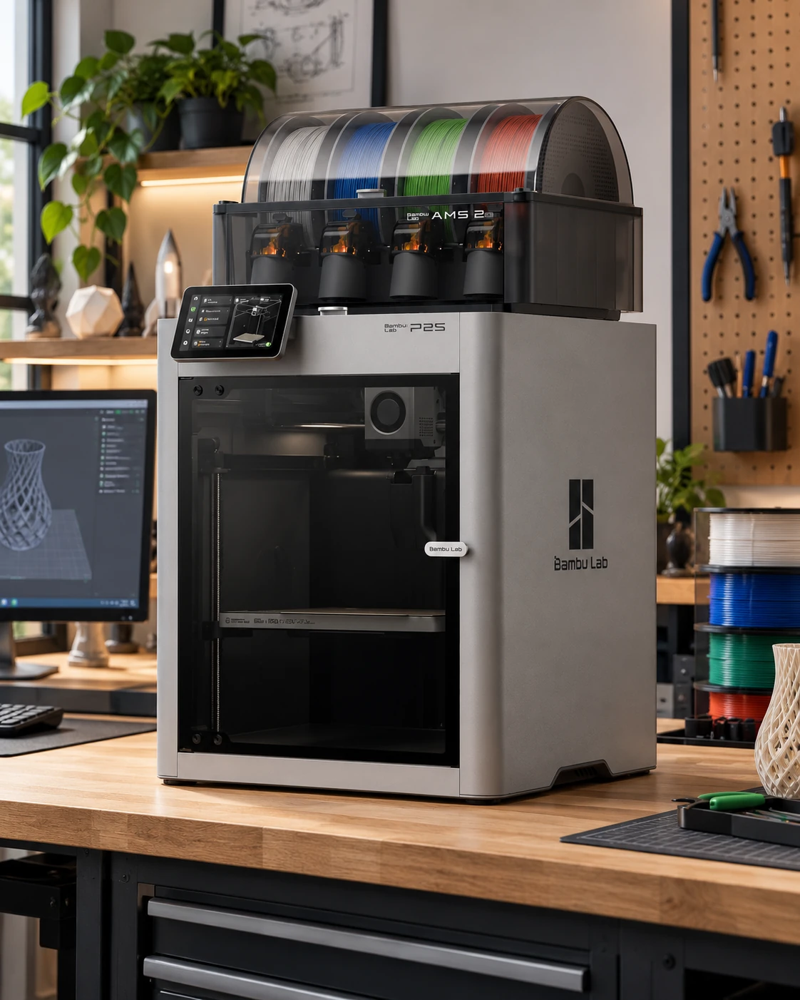
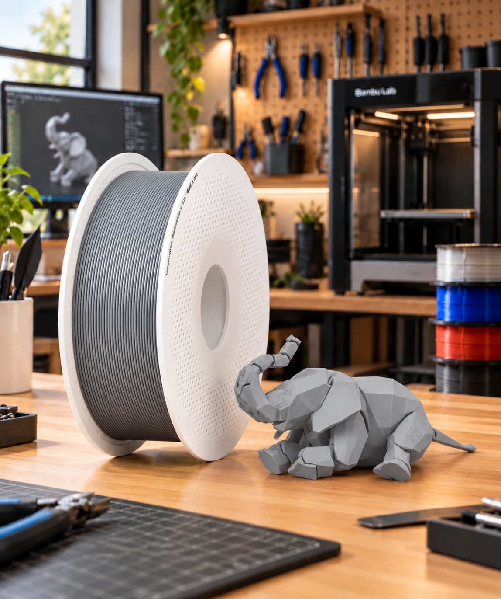
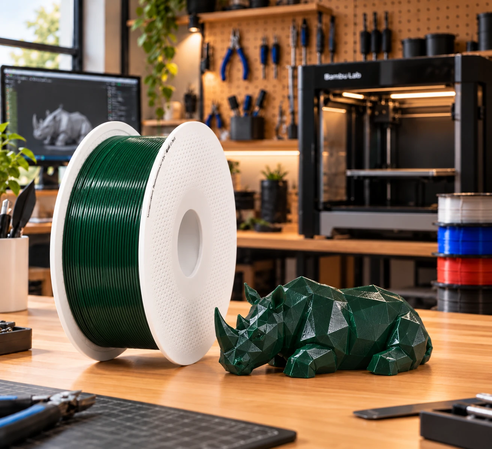

◫
Printservice op aanvraag
Stuur een bestaand 3D-model aan. We beoordelen printbaarheid, materiaal, formaat, gewicht en printtijd en sturen daarna een prijsvoorstel.
Lever je STL-, STEP- of 3MF-bestand aan. We beoordelen de printbaarheid, adviseren over PLA of PETG en sturen een prijsvoorstel. Na akkoord plannen we de print. Verzending is mogelijk naar Nederland en België.

Je kunt bij ons terecht voor hobbyprojecten, prototypes, losse onderdelen en kleine series. We beoordelen per aanvraag wat uitvoerbaar is.
Stuur een bestaand 3D-model aan. We beoordelen printbaarheid, materiaal, formaat, gewicht en printtijd en sturen daarna een prijsvoorstel.
Een paar identieke onderdelen nodig? Kleine batches zijn mogelijk, afgestemd op beschikbare productiecapaciteit en gewenste levertijd.
Onze collectie eigen 3D-geprinte producten is in voorbereiding. Voor een onderdeel op maat kun je alvast een aanvraag doen.
Upload STL, STEP of 3MF en geef materiaal, kleur, aantal en eventuele eisen door.
We controleren het model en berekenen de prijs op basis van onder andere materiaal en printtijd.
Na akkoord plannen we de print in op een Bambu Lab-printer.
Na kwaliteitscontrole wordt je bestelling zorgvuldig verpakt en naar Nederland of België verzonden.
PLA is geschikt voor veel prototypes, decoratieve prints en onderdelen voor binnen. PETG is taaier en beter bestand tegen vocht. We bekijken welk materiaal past bij het gebruik van je onderdeel.

